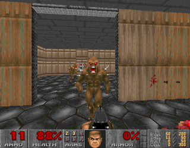
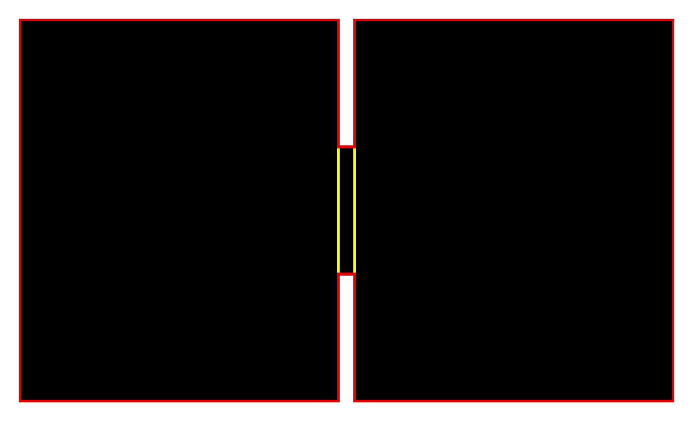
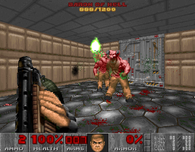
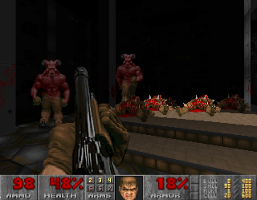

<!DOCTYPE html>
<html>
<title>Origwad | Doom: Rediscovering History</title>
	<meta charset="utf-8">
	<meta content="OWLY.FANS" property="og:title" />
	<meta content="Because Sometimes Doom is just bad" property="og:description" />
	<meta property="og:image" content="https://owly.fans/floppy.png">
	<meta content="#9B4F96" data-react-helmet="true" name="theme-color" />
    <meta name="keywords" content="owly, cass python, neocities, neozones, brit, uk, archive, site ran by a stud, england, wales">
	<link rel="shortcut icon" type="image/x-icon" href="../../../favicon.ico">
    <link rel="stylesheet" href="../../style.css">
    </html>
	    <body><p><a href="../">Back to index</a></p>
		<h1>Origwad</h1>
			<hr>
			<p></p>
			<em>Cass &#xAB;Owly&#xBB; Python, 2024-02-06. Published 2024-02-10.</em>
			
	<p><figure>
        <center></center>
		<figcaption><p>Screenshot from Jeffrey Bird's <em>Origwad</em>, made while he was at <a href="https://en.wikipedia.org/wiki/James_Cook_University">James Cook University</a> in North Queensland, Australia.</p>
		</figcaption>
		</figure></p>
<p>Ahh, 1993. What a year to be alive, despite me not being born yet. It's the year <a href="https://doomwiki.org/wiki/Clinton_Doom">Bill Clinton</a> is sworn into office, second example, and a third example, plus a cheeky fourth one. Despite all of these classics, it was also the year that the floodgates would metaphorically be opened thanks to id Software's publication of <strong>Doom</strong> and the wave of unofficial Doom mods, or &#xAB;WADs&#xBB; (meaning &#xAB;<strong>W</strong>here's <strong>A</strong>ll the <strong>D</strong>ata?&#xBB;), that would follow shortly after.</p>

<p>Since the early 90s, there have been hundreds of thousands WADs made by people, some even surpassing id Software's own game, others, not so much. But obviously, you have to start somewhere! So, what was the first unofficial mod for Doom? Well, as with a lot of early history of most things, it's up in the air as we will probably never, with full certainty, truly know. But what is usually thought to be one of <em>the</em> first, if not <strong>the</strong> first, is Jeffrey Bird's <a href="https://doomwiki.org/wiki/1994_level">March 1994</a> mod <a href="https://doomwiki.org/wiki/Origwad"><em>Origwad</em></a>.</p>

<p>The level itself opens up with you in a small box-shaped room with no windows, no decorations, nothing of interest except for a door that is directly opposite you, a shotgun to the left of that door, and finally a <a href="https://doomwiki.org/wiki/Shotgun_guy">shotgunner guy</a> to the right. Instinctively my reaction for the first time playing this would be to run to the gun and shoot the enemy. Opening the door reveals three <a href="https://doomwiki.org/wiki/Imp">imps</a> and two <a href="https://doomwiki.org/wiki/Baron_of_Hell">Baron of Hells</a>. Oh, and no more ammo or even any powerups. It is more than possible to take care of the three imps with your shotgun and pistol, but this still leaves room for the Barons, and remember, your ammo is now, at max, only a handful of shotgun shells and 50 bullets for your pistol. You have two choices; either try and kill these Barons with your fists or press the exit switch that's just on the wall. Oh yeah, this WAD (well, technically PWD but who's counting?) is just two rooms - two square rooms split up with only a door and a few monsters. Amazing.</p>

	<p><figure>
        <center><a href="origwad_map.png"></a></center>
					<figcaption><p>Automap of the whole WAD showing the level. The red is for the walls, yellow for the door.</p>
		</figcaption>
		</figure></p>

<p>Personally, as I don't care <em>all that much</em> about getting 100% kills, I just press the switch on the wall to end the game, but I always have been a beta cuck low-testosterone liberal or whatever losers on 4chan say nowadays.</p>

<p>With that said, I think it's more than fair to say that for the &#xAB;first&#xBB; fanmade Doom mod, it's a bit of a dud start and doesn't really have all that much to talk about the map itself, but also, according to the author at the time &#xAB;[t]his level has been generated entirely by hand. No editors were used to produce it&#xBB;. I find it <strong>very</strong> impressive nonetheless that Jeffrey Bird was about to essentially make his own level by just using code, no GUI or visualisation help, just <em>raw code</em>.</p>

<p>It shouldn't be all that shocking and groundbreaking that this level is, well, a little <em>crap</em>, especially by <script type="text/javascript">
var today = new Date()
var year = today.getFullYear()
document.write(year)
</script> standers, and even at the time it might not have been seen as anything all that amazing, but as I said, I think it's very cool that Jeffrey Bird made this - if I was in 1994, I would have no idea where to even start with making a WAD, let alone with somehow working out on how to use just raw code.</p>

	<p><figure>
        <center></center>
		<figcaption><p>I'm so glad that I can play <a href="https://doomwiki.org/wiki/Brutal_Doom">Brutal Doom</a> with Origwad, how else am I meant to enjoy it?</p>
		</figcaption>
		</figure></p>

<p>When it comes to this level being <em>sort of</em> well-known, a lot of it boils down to the fact that this is usually agreed upon as being the first fanmade Doom mod. Personally, being the contrarian I am, I'm not 100% sold on this. Firstly, people were <a href="https://www.youtube.com/watch?v=O_PZCgY74z0">able to figure out a number of cheat codes for Doom just a day after its release</a> on the eleventh of December 1993, second, there are 89 days between the publication of Doom and Origwad coming out on the ninth of March 1994 (although the timestamp on the <tt>PWD</tt> and README say serventh of March). I kind of find it hard to believe that there weren't some fanmade WADs before that was floating around on the Internet at the time, not even someone's edit of E1M1 where all of the monsters have been replaced by <a href="https://doomwiki.org/wiki/Cyberdemon">cyberdemons</a>.</p>

<p>Now, even at the time of this level's arrival, people on Usenet (yes, it's <em>that old</em>) were doubtful as to if this was even the first. David Simpson, <a href="https://groups.google.com/g/alt.games.doom/c/FOxTrqBNWSY">in reply to a thread about Origwad on alt.games.doom</a>, stated that they made an earlier mod, quote:</p>

<p><blockquote><cascadia>I seriously doubt it is the first since I had a new level created for DOOM over a month ago, but four walls, several monsters and weapons isn't much to boast about [and] since I did it by hand it only required knowledge of how the WAD file works.</cascadia></p>

			<p><cascadia>However, it is still an [achievement] I just didn't think it was too interesting to other people (just the tiny level).</cascadia></blockquote></p>

<p>Despite what Simpson says, I sadly could not find him anywhere on <a href="https://doomwiki.org/wiki/Idgames_archive">the /idgames archive</a> or on <a href="https://doomwiki.org/wiki/Doom_Wiki">the Doom Wiki</a>, so if he really made an earlier Doom mod, that's yet to be seen.</p>

<p>Regardless to if what David Simpson was telling the truth or not, two days after Origwad was publised online, on the elenthenth of March, we'd get what also might be the first <a href="https://doomwiki.org/wiki/Deathmatch">deathmatch map</a>; presenting, <yell><a href="https://doomwiki.org/wiki/CROSS.WAD">Cross.WAD</a></yell> by Alistair Brown. Yet another simple map, this one was made for a DM team of four players to battle it out. When starting the game, the player will be spawned in one of four spots, either being given a shotgun, a chaingun, a plasma rifle, or a chainsaw (<em>didn't you mom ever tell you not to bring a chaninsaw to a shotgun fight?</em>). Much like <em>Origwad</em>, this level is mostly made out of squares, with the player starting off in a small tunnel, picking up their weapon, and then dropping into a small pit where they will, no doubt, have lots of fun <a href="https://doomwiki.org/wiki/Frag">fragging their friends</a>. Despite what might be one of the most basic ways to do a deathmatch level, it sure seems fun, like, <em>yeah</em>, I know it's a pit, but the tinyness of the level helps it become frantic to get your friends back after they kill you, and you can kill them back in seconds thanks to the small size of this map.</p>

<p>As you would exspect, yeah, it's basic, but it does what it's meant to do, plus what I find intresting about this map is that not only did Alistair Brown write this in C++, but he also drew the map on paper first; &#xAB;This wasn't too difficult as the level consisted of a square room with a square dais in the centre.&#xBB; Brown wrote, &#xAB;I needed this map a LOT. Mainly for making sure that I was using the correct vertex numbers, and for other things like linedefs &#x26; segments&#xBB;.</p>

	<p><figure>
        <center></center>
		<figcaption><p>Servernteen years after the release of Origwad in 2011, the level was remade in <a href="https://doomwiki.org/wiki/1994_Tune-up_Community_Project">1994 Tune-up Community Project</a> on <a href="https://doomwiki.org/wiki/MAP31:_Original_Sin_(1994_Tune-up_Community_Project)">the map Original Sin</a>.</p>
		</figcaption>
		</figure></p>

<p>For <a href="https://www.doomworld.com/idgames/levels/doom/deathmatch/a-c/crossa">the download of <yell>Cross.WAD</yell></a>, there's a useful file incuded that is a copy and paste of a post Brown made on Usenet talking about this map, <a href="../../texts/misc/make-lvl.html">it's quite a read if you're intrested in what he has to say</a>.</p>

<p>Much like David Simpson with his <a href="https://en.wikipedia.org/wiki/Vaporware">vaporware</a> WAD that he may-or-may-not-have made, I could not find anything else Doom-related by Alistair Brown.</p>

<p>Now moving into the 2010s and back to Origwad, a number of the Doom community came up with the idea of resurrecting 1994/'95 maps and recreating them for a new generation of knowledge that comes with many years of level editing. <a href="https://doomwiki.org/wiki/1994_Tune-up_Community_Project">1994 Tune-up Community Project</a>, as started in 2008 and finished in 2011, is a <a href="https://doomwiki.org/wiki/Megawad">full 32 map megawad</a> that is a bit of a love letter to the early wilderness days of the community. One of the remakes is, as you would have guessed, is Origwad, or the aptly named <em>Original Sin</em> (<yell>map31</yell>), remade by Travers &#xAB;traversd&#xBB; Dunne (who also coordinated the megawad project).</p>

<p>Unsurprisingly, to the shock of no-one, <em>Original Sin</em> is a lot better than the level is was based on, duh. The map starts you off at the end of <a href="https://doomwiki.org/wiki/E1M8:_Phobos_Anomaly_(Doom)">E1M8: Phobos Anomaly</a>, just before the teleporter. Once you enter the teleporter to what would normally be the kill room, you are surrounded by <a href="https://doomwiki.org/wiki/Demon">pinkies</a>, imps, and shotgun guys. I think the first few times playing this level, it kicked my butt to say the least, but once I realized that <em>oh, I picked up a chaingun</em> I was able to do crowd control a lot better on the monsters, still, the once you beat <em>that</em> room, you still have the second to go through with more imps and, you guessed it! Two barrons to fight off.</p>

<p>The remake by traversd is a lot of fun to say the least and I really enjoyed it, despite being killed a good handful of times the first time playing this level, and it certainly is a fun evolution of Jeffrey Bird's now primitive map and mapping-skills.</p>

<p>With this all said and done, I am very aware of the sheer age of Origwad and how it's over 30-years-old at this point, but as a whole, 1994 for the Doom modding community was kind of rough. People lacked the experience of map making that they have now, tools for editing were in their infancy, plus computers were just a whole lot slower. <a href="https://doomwiki.org/wiki/Doomworld">Doomworld</a> <a href="https://www.doomworld.com/10years/bestwads/1994.php">did do an article in 2003 covering the best 1994 Doom WADs</a> as a way to show off the ten best WADs from that era, but, in my opinion as someone who knows to hit my keyboard and write reviews like the one you're reading, even the best are... um, well, kind of a little... well, I guess poor in quality compared to what we have now, but still, I have a soft spot for some of the ones listed, mainly <a href="https://doomwiki.org/wiki/The_Unholy_Trinity">The Unholy Trinity</a> where the authors went around the real-life <a href="https://en.wikipedia.org/wiki/Trinity_College,_Cambridge">Trinity College</a>, taking photos of walls, signs, and other things in Trinity and recreated the college in Doom using the photos as textures, showing that even in 1994, people were able to come up with unique ideas to map-making that <a href="https://doomwiki.org/wiki/Id_Software">the boys at id</a> just did not think of.</p>

<p>This is a long way of saying, no, the early days of Doom modding are not a total wipeout when it comes to fun, entertaining, and creative WADs, hell, I didn't even talk about <a href="https://doomwiki.org/wiki/Aliens_TC">Aliens TC</a>, but sadly, despite being what might be the first WAD, <em>at least the first published one</em>, it's not the best start to what would be one of the most unique and growing modding scene, but as I said, you have to start somewhere.</p>

<p>Downloads</p>
	<ul>
	<li><a href="https://doomworld.com/idgames/levels/doom/m-o/origwad">/idgames archive</a></li>
</ul>  

<p></p>
	<hr>
<p>The automap image was made by me using <a href="https://www.chocolate-doom.org">Chocolate Doom</a>. I have strong doubts that this image can even be copyrighted due to it only being simple shapes put together, so as far as I, someone who is not a lawyer, can tell, this image would be public domain.</p>

<p><strong>Want to support OwlyFans? <a href="/nft/">See our NFTs</a>!</strong>
</p>

	
	<p>Copyright 2024 - <script type="text/javascript">
var today = new Date()
var year = today.getFullYear()
document.write(year)
</script> by Cass &#xAB;Owly&#xBB; Python, licensed under the <a href="../../../license/fopl-mdp-v2" title="The Freedom Owl Public License: Modifications, Distributions, and Private Use Version 2" alt="The Freedom Owl Public License: Modifications, Distributions, and Private Use Version 2">FOPL-MDP V.2</a>. Please see <a href="../../../humans.html">humans.html</a> for full credit and thanks. Peace and love.</p>
<p><font color="black"><center>&#x2605;</center></font></p>
<p>
<div style="text-align:right">
<a href="http://bytemoth.nfshost.com/cd5k-net/tau">&tau;</a>
</p>
</div>
<p></p>
	<script src="../../../ruffle/ruffle.js"></script>
<script src="../../../script.js"></script>
    </body>
</html>